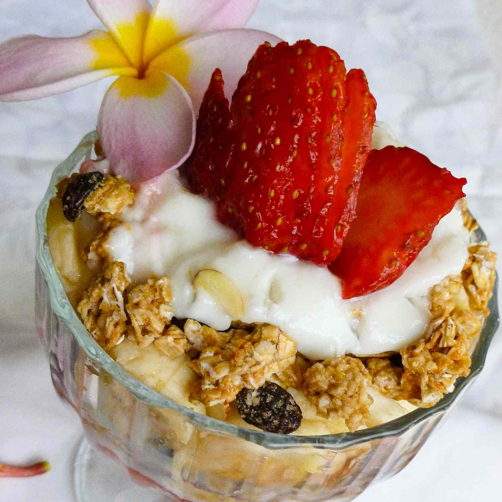

Yogurt Parfait

Description
This large parfait can be made for a delicious breakfast - or it can be halved for a yummy snack.
Enjoy it using fresh or frozen blueberries, but fresh strawberries are recommended.
Ingredients
- ¾ cup sliced strawberries
- ¾ cup blueberries
- 1 (6 ounce) container vanilla yogurt
- 1 tablespoon wheat germ
- ½ banana, sliced
- ⅓ cup granola
- Layer 1/4 cup strawberries, 1/4 cup blueberries, 1/3 container yogurt, 1/3 tablespoon wheat germ, 1/3 of the sliced banana, and about 2 tablespoons of granola in a large bowl.
- Continue to build the parfait, repeating the layers until all of the ingredients are used completely.